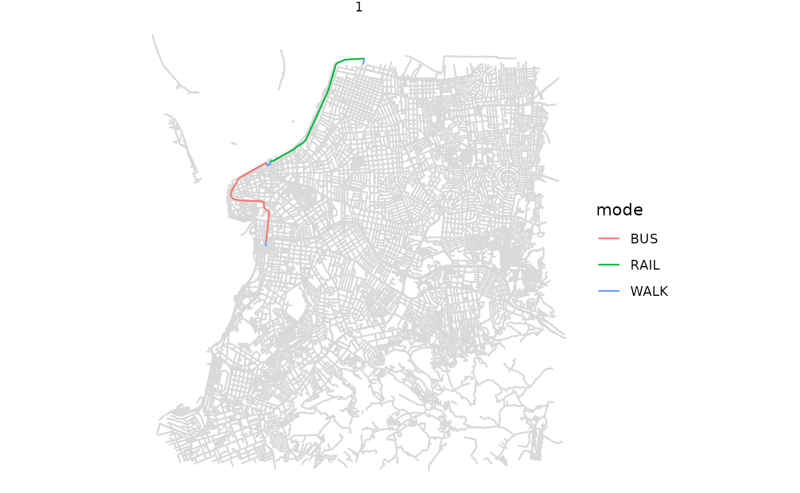

../vignettes/r5r.Rmd
r5r.RmdAbstract
r5r is an R package for rapid realistic routing on
multimodal transport networks (walk, bike, public transport and
car) using R5. The package allows users to generate
detailed routing analysis or calculate travel time matrices using
seamless parallel computing on top of the R5 Java
machine https://github.com/conveyal/r5
r5r is an R package for rapid realistic routing on multimodal transport networks (walk, bike, public transport and car). It provides a simple and friendly interface to R5, a really fast and open source Java-based routing engine developed separately by Conveyal. R5 stands for Rapid Realistic Routing on Real-world and Reimagined networks. More details about r5r can be found on the package webpage or on this paper.
You can install r5r from CRAN, or the development
version from github.
# CRAN
install.packages('r5r')
# dev version on github
devtools::install_github("ipeaGIT/r5r", subdir = "r-package")Please bear in mind that you need to have Java SE Development Kit
11 installed on your computer to use r5r. No worries,
you don’t have to pay for it. The jdk 11 is freely available from the
options below: - OpenJDK - Oracle
If you don’t know what version of Java you have installed on your computer, you can check it by running this on R console.
Before we start, we need to increase the memory available to Java.
This is necessary because, by default, R allocates only
512MB of memory for Java processes, which is not enough for large
queries using r5r. To increase available memory to 2GB, for
example, we need to set the java.parameters option at the
beginning of the script, as follows:
options(java.parameters = "-Xmx2G")Note: It’s very important to allocate enough memory before loading
r5r or any other Java-based package, since
rJava starts a Java Virtual Machine only once for each R
session. It might be useful to restart your R session and execute the
code above right after, if you notice that you haven’t succeeded in your
previous attempts.
Then we can load the packages used in this vignette:
The r5r package has seven fundamental
functions:
setup_r5() to initialize an instance of
r5r, that also builds a routable transport
network;
accessibility() for fast computation of access to
opportunities considering a selected decay function;
travel_time_matrix() for fast computation of travel
time estimates between origin/destination pairs;
expanded_travel_time_matrix() for calculating travel
matrices between origin destination pairs with additional information
such as routes used and total time disaggregated by access, waiting,
in-vehicle and transfer times.
detailed_itineraries() to get detailed information
on one or multiple alternative routes between origin/destination
pairs.
pareto_frontier() for analyzing the trade-off
between the travel time and monetary costs of multiple route
alternatives between origin/destination pairs.
isochrone() to estimate the polygons of the areas
that can be reached from an origin point at different travel time
limits.
Most of these functions also allow users to account for monetary travel costs when generating travel time matrices and accessibility estimates. More info about how to consider monetary costs can be found in this vignette.
The package also includes a few support functions.
street_network_to_sf() to extract OpenStreetMap
network in sf format from a network.dat file.
transit_network_to_sf() to extract transit network
in sf format from a network.dat file.
find_snap() to find snapped locations of input
points on street network.
r5r_sitrep() to generate a situation report to help
debug eventual errors.
To use r5r, you will need: - A road network data set
from OpenStreetMap in .pbf format (mandatory) - A
public transport feed in GTFS.zip format (optional) - A
raster file of Digital Elevation Model data in .tif format
(optional)
Here are a few places from where you can download these data sets:
Let’s have a quick look at how r5r works using a sample
data set.
To illustrate the functionalities of r5r, the package
includes a small sample data for the city of Porto Alegre (Brazil). It
includes seven files:
poa_osm.pbf
poa_eptc.zip and
poa_trensurb.zip
poa_elevation.tif
poa_hexgrid.csv file with spatial coordinates of a
regular hexagonal grid covering the sample area, which can be used as
origin/destination pairs in a travel time matrix calculation.poa_points_of_interest.csv file containing the names
and spatial coordinates of 15 places within Porto Alegrefares_poa.zip file with the fare rules of the city’s
public transport system.
data_path <- system.file("extdata/poa", package = "r5r")
list.files(data_path)
#> [1] "fares" "network_settings.json"
#> [3] "network.dat" "poa_elevation.tif"
#> [5] "poa_eptc.zip" "poa_hexgrid.csv"
#> [7] "poa_osm.pbf" "poa_osm.pbf.mapdb"
#> [9] "poa_osm.pbf.mapdb.p" "poa_points_of_interest.csv"
#> [11] "poa_trensurb.zip"The points of interest data can be seen below. In this example, we will be looking at transport alternatives between some of those places.
poi <- fread(file.path(data_path, "poa_points_of_interest.csv"))
head(poi)
#> id lat lon
#> 1: public_market -30.02756 -51.22781
#> 2: bus_central_station -30.02329 -51.21886
#> 3: gasometer_museum -30.03404 -51.24095
#> 4: santa_casa_hospital -30.03043 -51.22240
#> 5: townhall -30.02800 -51.22865
#> 6: piratini_palace -30.03363 -51.23068The data with origin destination pairs is shown below. In this example, we will be using 200 points randomly selected from this data set.
points <- fread(file.path(data_path, "poa_hexgrid.csv"))
# sample points
sampled_rows <- sample(1:nrow(points), 200, replace=TRUE)
points <- points[ sampled_rows, ]
head(points)
#> id lon lat population schools jobs healthcare
#> 1: 89a90129a53ffff -51.14157 -30.01779 433 0 23 0
#> 2: 89a9012802fffff -51.20115 -30.06129 602 1 105 0
#> 3: 89a9012848fffff -51.19940 -30.09333 31 0 0 0
#> 4: 89a901286c3ffff -51.16874 -30.08762 160 0 0 0
#> 5: 89a90128eabffff -51.22153 -30.03874 1443 0 646 0
#> 6: 89a9012ae1bffff -51.23567 -30.08745 594 0 39 0setup_r5()
The first step is to build the multimodal transport network used for
routing in R5. This is done with the setup_r5
function. This function does two things: (1) downloads/updates a
compiled JAR file of R5 and stores it locally in the
r5r package directory for future use; and (2) combines the
osm.pbf and gtfs.zip data sets to build a routable network object.
# Indicate the path where OSM and GTFS data are stored
r5r_core <- setup_r5(data_path = data_path)The fastest way to calculate accessibility estimates is using the
accessibility() function. In this example, we calculate the
number of schools and health care facilities accessible in less than 60
minutes by public transport and walking. More details in this vignette
on Calculating
and visualizing Accessibility.
# set departure datetime input
departure_datetime <- as.POSIXct("13-05-2019 14:00:00",
format = "%d-%m-%Y %H:%M:%S")
# calculate accessibility
access <- accessibility(r5r_core = r5r_core,
origins = points,
destinations = points,
opportunities_colnames = c("schools", "healthcare"),
mode = c("WALK", "TRANSIT"),
departure_datetime = departure_datetime,
decay_function = "step",
cutoffs = 60
)
head(access)
#> id opportunity percentile cutoff accessibility
#> 1: 89a90129a53ffff schools 50 60 19
#> 2: 89a90129a53ffff healthcare 50 60 9
#> 3: 89a9012802fffff schools 50 60 31
#> 4: 89a9012802fffff healthcare 50 60 13
#> 5: 89a9012848fffff schools 50 60 3
#> 6: 89a9012848fffff healthcare 50 60 0For fast routing analysis, r5r currently has three
core functions: travel_time_matrix(),
expanded_travel_time_matrix() and
detailed_itineraries().
The travel_time_matrix() function is a really simple and
fast function to compute travel time estimates between one or multiple
origin/destination pairs. The origin/destination input can be either a
spatial sf POINT object, or a data.frame
containing the columns id, lon, lat. The function also
receives as inputs the max walking distance, in meters, and the
max trip duration, in minutes. Resulting travel times are also
output in minutes.
This function also allows users to very efficiently capture the travel time uncertainties inside a given time window considering multiple departure times. More info on this vignette.
# set inputs
mode <- c("WALK", "TRANSIT")
max_walk_time <- 30 # minutes
max_trip_duration <- 120 # minutes
departure_datetime <- as.POSIXct("13-05-2019 14:00:00",
format = "%d-%m-%Y %H:%M:%S")
# calculate a travel time matrix
ttm <- travel_time_matrix(r5r_core = r5r_core,
origins = poi,
destinations = poi,
mode = mode,
departure_datetime = departure_datetime,
max_walk_time = max_walk_time,
max_trip_duration = max_trip_duration)
head(ttm)
#> from_id to_id travel_time_p50
#> 1: public_market public_market 0
#> 2: public_market bus_central_station 14
#> 3: public_market gasometer_museum 12
#> 4: public_market santa_casa_hospital 15
#> 5: public_market townhall 3
#> 6: public_market piratini_palace 17For those interested in more detailed outputs, the
expanded_travel_time_matrix() works very similarly with
travel_time_matrix() but it brings much more information.
It estimates for each origin destination pair the routes used and total
time disaggregated by access, waiting, in-vehicle and transfer times.
Please note this function can be very memory intensive for large data
sets.
# calculate a travel time matrix
ettm <- expanded_travel_time_matrix(r5r_core = r5r_core,
origins = poi,
destinations = poi,
mode = mode,
departure_datetime = departure_datetime,
breakdown = TRUE,
max_walk_time = max_walk_time,
max_trip_duration = max_trip_duration)
head(ettm)
#> from_id to_id departure_time draw_number access_time wait_time
#> 1: public_market public_market 14:00:00 1 0 0
#> 2: public_market public_market 14:01:00 1 0 0
#> 3: public_market public_market 14:02:00 1 0 0
#> 4: public_market public_market 14:03:00 1 0 0
#> 5: public_market public_market 14:04:00 1 0 0
#> 6: public_market public_market 14:05:00 1 0 0
#> ride_time transfer_time egress_time routes n_rides total_time
#> 1: 0 0 0 [WALK] 0 0
#> 2: 0 0 0 [WALK] 0 0
#> 3: 0 0 0 [WALK] 0 0
#> 4: 0 0 0 [WALK] 0 0
#> 5: 0 0 0 [WALK] 0 0
#> 6: 0 0 0 [WALK] 0 0Most routing packages only return the fastest route. A key advantage
of the detailed_itineraries() function is that is allows
for fast routing analysis while providing multiple alternative routes
between origin destination pairs. The output also brings detailed
information for each route alternative at the trip segment level,
including the transport mode, waiting times, travel time and distance of
each trip segment.
In this example below, we want to know some alternative routes between one origin/destination pair only.
# set inputs
origins <- poi[10,]
destinations <- poi[12,]
mode <- c("WALK", "TRANSIT")
max_walk_time <- 60 # minutes
departure_datetime <- as.POSIXct("13-05-2019 14:00:00",
format = "%d-%m-%Y %H:%M:%S")
# calculate detailed itineraries
det <- detailed_itineraries(r5r_core = r5r_core,
origins = origins,
destinations = destinations,
mode = mode,
departure_datetime = departure_datetime,
max_walk_time = max_walk_time,
shortest_path = FALSE)
head(det)
#> Simple feature collection with 6 features and 16 fields
#> Geometry type: LINESTRING
#> Dimension: XY
#> Bounding box: xmin: -51.24094 ymin: -30.05 xmax: -51.19762 ymax: -29.99729
#> Geodetic CRS: WGS 84
#> from_id from_lat from_lon to_id to_lat
#> 1 farrapos_station -29.99772 -51.19762 praia_de_belas_shopping_center -30.04995
#> 2 farrapos_station -29.99772 -51.19762 praia_de_belas_shopping_center -30.04995
#> 3 farrapos_station -29.99772 -51.19762 praia_de_belas_shopping_center -30.04995
#> 4 farrapos_station -29.99772 -51.19762 praia_de_belas_shopping_center -30.04995
#> 5 farrapos_station -29.99772 -51.19762 praia_de_belas_shopping_center -30.04995
#> 6 farrapos_station -29.99772 -51.19762 praia_de_belas_shopping_center -30.04995
#> to_lon option departure_time total_duration total_distance segment mode
#> 1 -51.22875 1 14:09:10 36.2 9460 1 WALK
#> 2 -51.22875 1 14:09:10 36.2 9460 2 RAIL
#> 3 -51.22875 1 14:09:10 36.2 9460 3 WALK
#> 4 -51.22875 1 14:09:10 36.2 9460 4 BUS
#> 5 -51.22875 1 14:09:10 36.2 9460 5 WALK
#> 6 -51.22875 2 14:09:43 48.7 8779 1 WALK
#> segment_duration wait distance route geometry
#> 1 4.6 0.0 174 LINESTRING (-51.1981 -29.99...
#> 2 6.6 1.3 4796 LINHA1 LINESTRING (-51.19763 -29.9...
#> 3 5.7 0.0 256 LINESTRING (-51.22827 -30.0...
#> 4 10.4 4.4 4083 188 LINESTRING (-51.22926 -30.0...
#> 5 3.2 0.0 151 LINESTRING (-51.22949 -30.0...
#> 6 4.6 0.0 174 LINESTRING (-51.1981 -29.99...The output is a data.frame sf object, so we can easily
visualize the results.
Static visualization with ggplot2
package: To provide a geographic context for the visualization of the
results in ggplot2, you can also use the
street_network_to_sf() function to extract the OSM street
network used in the routing.
# extract OSM network
street_net <- street_network_to_sf(r5r_core)
# extract public transport network
transit_net <- r5r::transit_network_to_sf(r5r_core)
# plot
ggplot() +
geom_sf(data = street_net$edges, color='gray85') +
geom_sf(data = det, aes(color=mode)) +
facet_wrap(.~option) +
theme_void()
r5r objects are still allocated to any amount of memory
previously set after they are done with their calculations. In order to
remove an existing r5r object and reallocate the memory it
had been using, we use the stop_r5 function followed by a
call to Java’s garbage collector, as follows:
If you have any suggestions or want to report an error, please visit the package GitHub page.